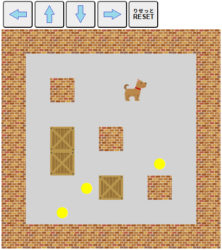

【
倉庫番
そうこばん
】
指定
してい
の
場所
ばしょ
にすべての
荷物
にもつ
を
運
はこ
べば、クリアです。

矢印
やじるし
キーを
使
つか
って、
犬
いぬ
を
操作
そうさ
します。
・
荷物
にもつ
は
押
お
すことしかできません。
荷物
にもつ
を
引
ひ
いて
動
うご
かすことはできません。
・
荷物
にもつ
は
一度
いちど
にひとつしか
押
お
すことができません。
・
犬
いぬ
が
壁
かべ
や
荷物
にもつ
を
通
とお
り
抜
ぬ
けることはできません。
・すべての
荷物
にもつ
を
指定
してい
された
場所
ばしょ
（
黄色
きいろ
の●
印
しるし
）へ
運
はこ
べばクリアとなります。
・[
RESET
りせっと
]ボタンをクリック（タッチ）すると
最初
さいしょ
からやり
直
なお
す
事
こと
ができます。
閉
と
じる